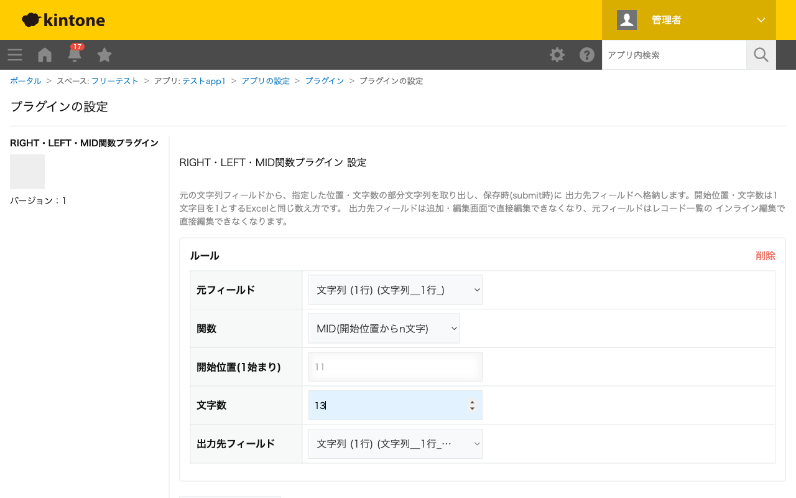

GovAppsプラグイン 安全性を確認できる無料kintoneプラグイン集
Excel等の表計算ソフトにあるLEFT・RIGHT・MID関数のような文字列の
部分取得を、kintoneの基本機能にない形で行います。元の文字列フィールドから指定した位置・文字数の
部分文字列を取り出し、保存時(submit時)に出力先フィールドへ格納します。
「品番の先頭3文字が事業部コード」「社員番号の末尾2桁が拠点コード」のように、固定長コードの一部だけを別フィールドに取り出したい場合に使えます。LEFTで先頭n文字、RIGHTで末尾n文字を取得できます。
MID関数を使うと、「4文字目から3文字」のように途中の位置から部分文字列を取得できます。開始位置・文字数はExcelと同じく1文字目を1とする数え方です。
同じ元フィールドに対して複数のルールを設定できるため、1つのコード文字列から「先頭2文字」「3〜5文字目」「末尾1文字」のようにそれぞれ別のフィールドへ分解して格納することもできます。
指定した文字数が元の文字列より長い場合はエラーにならず、存在する分だけを返します(Excelと同じ挙動)。
kintoneセキュアコーディングガイドラインに沿って実装時にチェックしています。特に重要な点は次のとおりです。
textContentまたはcreateElementで行っており、innerHTMLへの外部由来文字列の差し込みはありません。String.prototype.slice()のみ使用)。詳細な確認項目・確認日は下記GitHubのチェックリストに全項目を掲載しています。

このプラグインはREST APIを一切実行しません。フィールド情報の取得はkintone.app.getFormFields()のみで行い、
切り出し処理はsubmitイベント内のローカルな文字列処理のみで完結します。API実行数制限に影響することはありません。